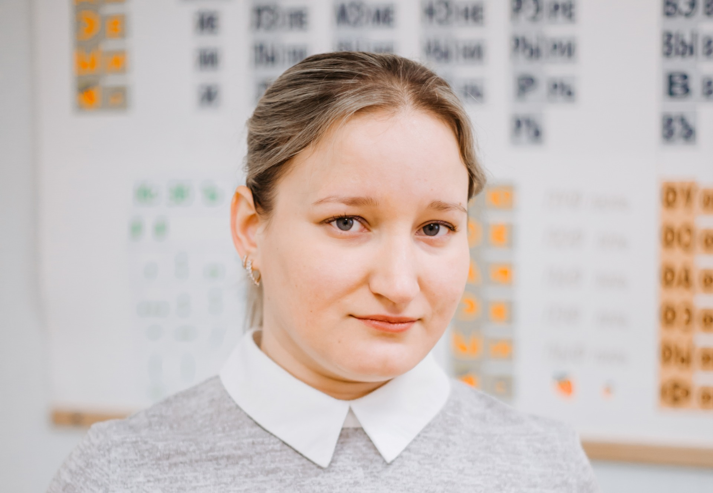

КМС.
Победитель и призер многих российских и международных соревнований.
Тренер по шахматам 1 категории. Среди учеников чемпионы и призеры Первенств Самарской области.

Чернозёмова
Чернозёмова(Николаева) Александра Владимировна.
Мастер ФИДЕ. Чемпионка области среди женщин в 2004 и 2005 годы.